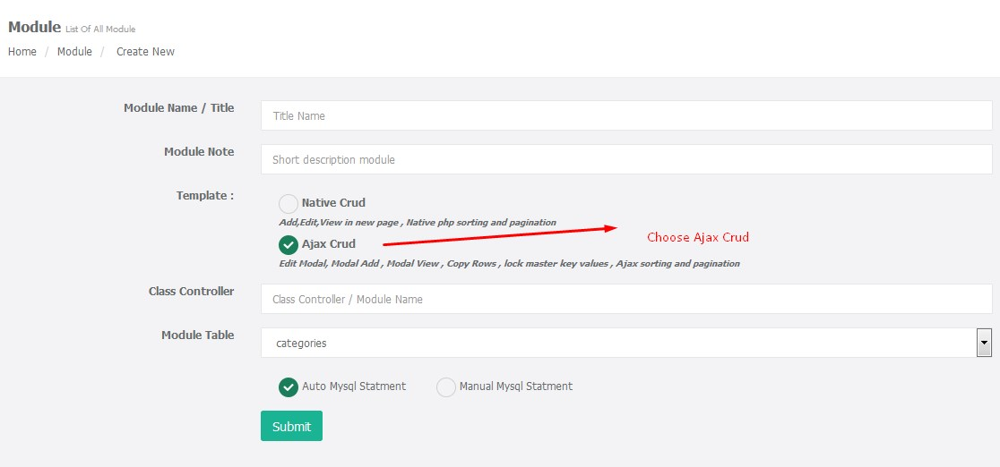
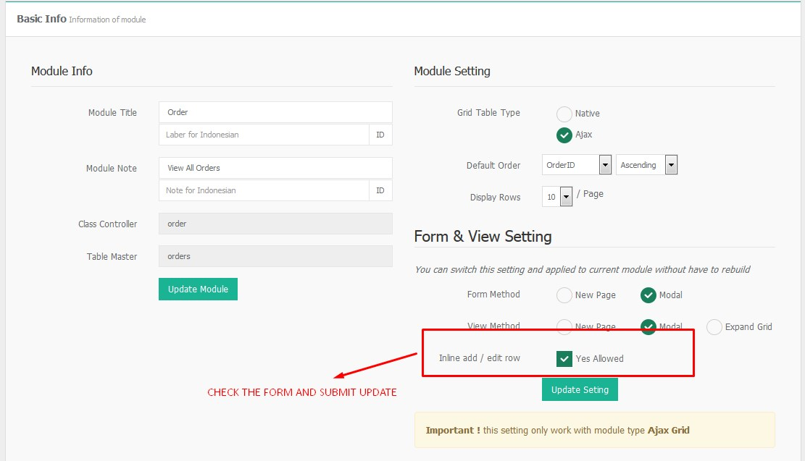
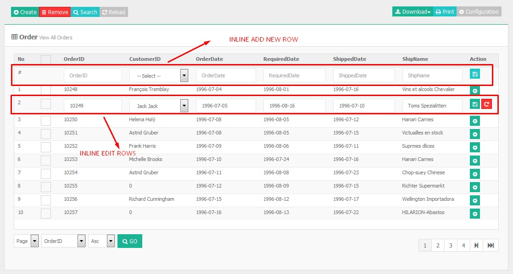
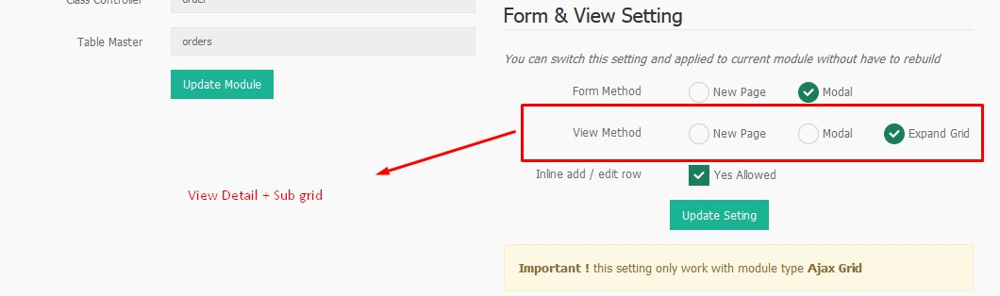
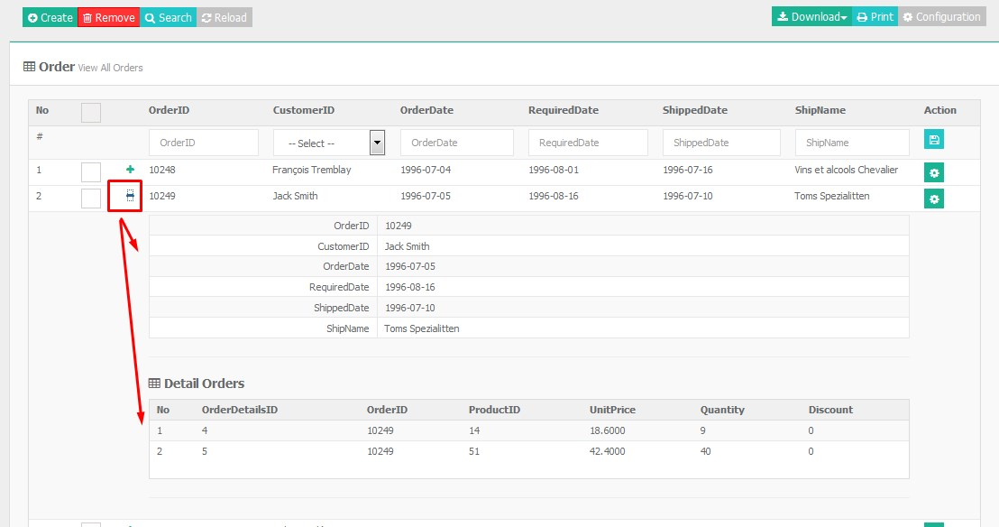
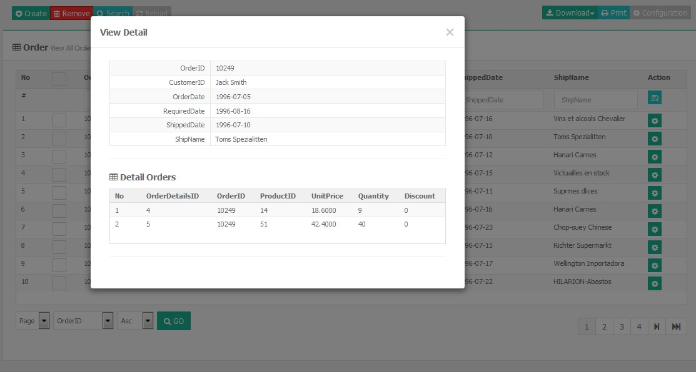
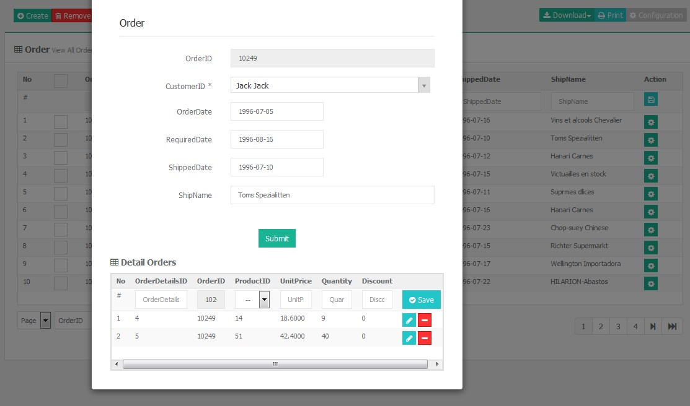
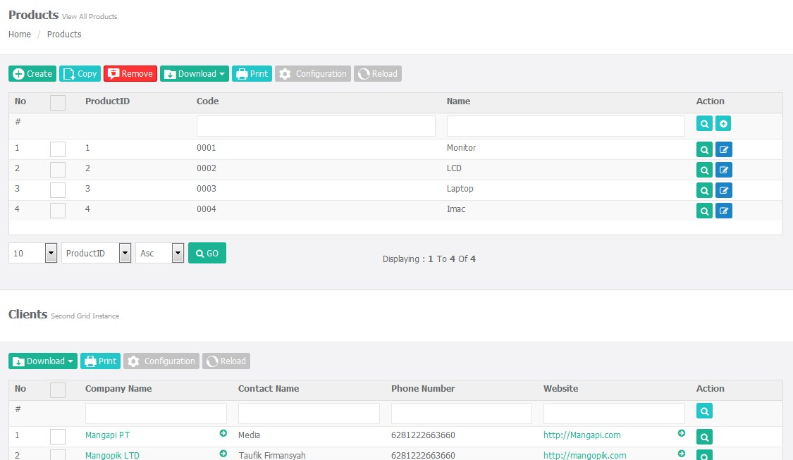
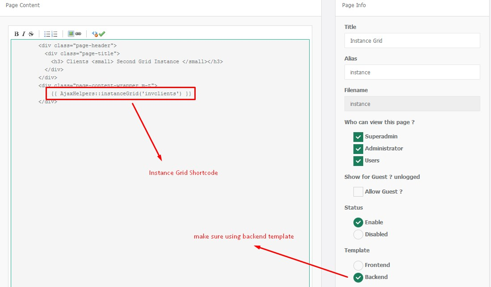
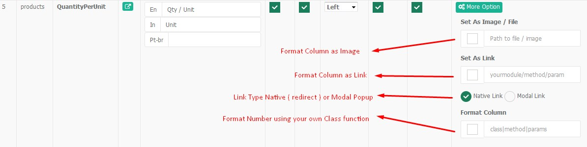

Sximo Ajax CRUD is patch/plugin for improve cruds made/generated by sximo builder , this give u more powerfull and elegant CRUD proccess. All process are done via AJAX technology
This Sximo Ajax Plugins running only with sximo builder version 2.9 or higher version
Extract sximoajax.zip from download page
In unzipped folder you will find folder directory like bellow for both version . use only sximo 3 folder.
All you have to do is just replace all current files folder with the new one
Delete all caches files under protected/app/storage/views file using your favorite php editor
Log to your application and point to code generator , you will see that new option for ajax grid are available there .

If you already have current module installed on your module management and you want to transform into ajax crud , you need to follow this following action :
This features only available for CRUD type AJAX . If you need to enable inline add and edit it's simple to setting without have to rebuild crud files

Double click on desire row , it will convert into form

This features only available for CRUD type AJAX . If you need to enable expand and edit it's simple to setting without have to rebuild crud files

If this module having master detail configuration , it will automaticaly displayed

If this module having master detail configuration , it will automaticaly displayed

If this module having master detail configuration , it will automaticaly displayed

Multiple grid is a way to displaying more than one crud in same page . There are 2 option to displaying more than one grid.
Please Note ! you only able to displaying grid if the module already exists
Example you are on Products page , and you want to display grid client at the bottom page

you can follow followint tutorial
1. open your index.blade for product module IE : protected/app/views/product/index.blade.php
2. Next you need to put shortcode at the bottom of page :
Assumming your second class/module name is 'clients'
<div class="page-header">
<div class="page-title">
<h3> Clients <small> Second Grid Instance </small></h3>
</div>
</div>
<div class="page-content-wrapper m-t">
{{ AjaxHelpers::instanceGrid('clients') }}
</div>
3. That's it , Enjoy !!

Grid formater is a way to format column value , example you have field number and you want to format into format number with symbol currency . Or you can make value link to spesific pages

Explanation
Yourmodule/function/field
class FormaterHelpers
{
public static function currNumber( $num){
return "USD ".number_format($num, 2, '.', ' ');
}
}
Usage
FormaterHelpers|currNumber|fieldfield is fieldname listed on your database table .
FormaterHelpers|currNumber|field:field2:field3
Sximo Ajax Plugins is using following plugins